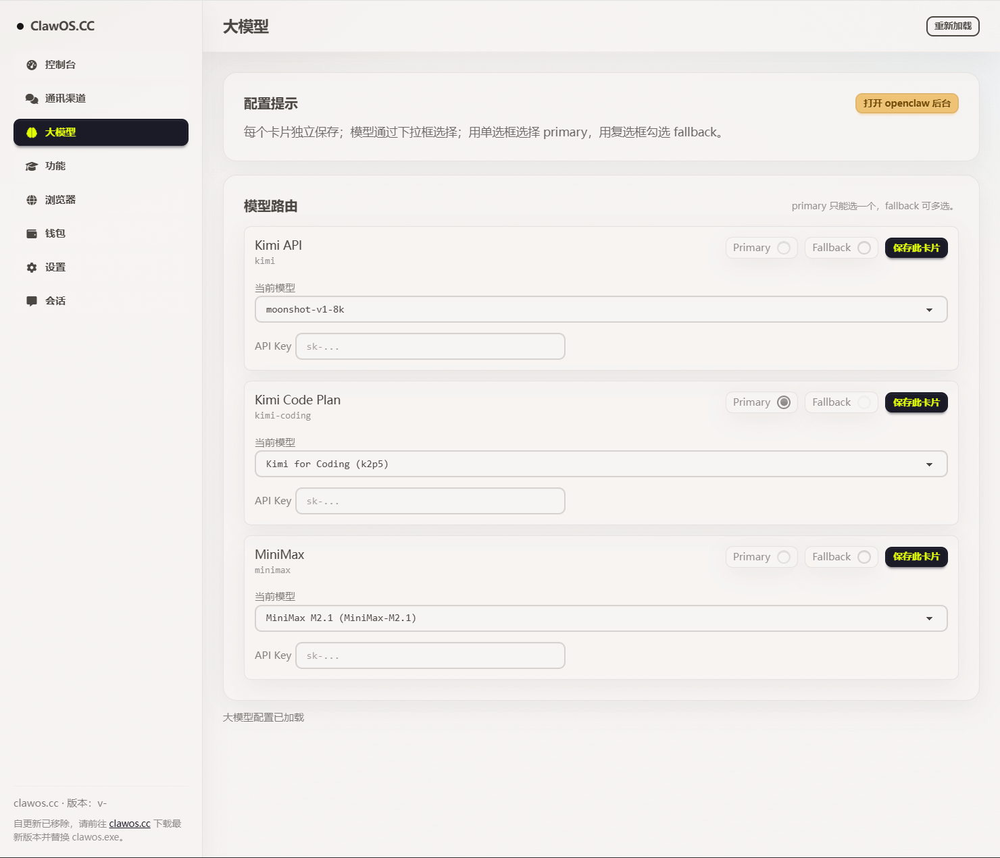

切换模型（先安装）
建议先确保 openclaw 与 ClawOS 已安装可用，再按下面任一方式切换模型。
方法一：通过官方命令行
- 打开 openclaw 的命令行界面。
- 输入以下命令并执行：
openclaw configure根据命令行指引，选择模型服务商并填写 API Key，保存后即可生效。
方法二：通过 ClawOS 一键切换
- 先升级 ClawOS 到 0.3.1。
- 打开 ClawOS，点击「大模型」。
- 根据需求填写 API Key，保存配置。
